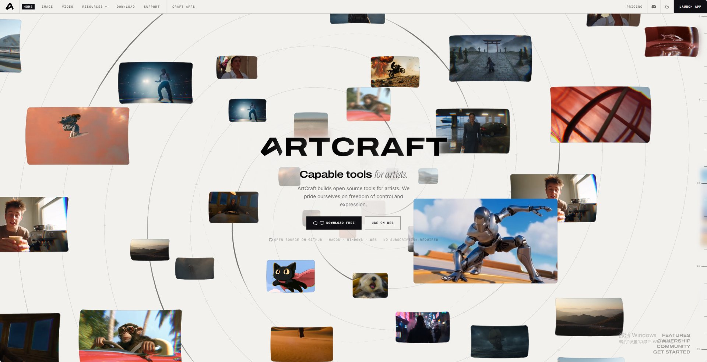

What Is ArtCraft? The Open-Source Creative Studio, Explained
ArtCraft is one of the fastest-rising open-source projects of October 2026 — and also one of the most confused. Search for it and you'll find two different products under one name: a controllable AI creation studio, and a family of seven free Adobe-alternative apps led by PhotoCraft. Both are real, both are open-source, and this guide covers both. Here's the clear picture.

Product line 1: the ArtCraft studio (controllable AI)
The main ArtCraft app — the one at getartcraft.com — is an open-source studio for AI image and video creation. Its pitch is control: instead of fighting text prompts, you compose the shot yourself in 2D layers or a real 3D scene — placing backdrops, props and posed characters, setting the camera — and then let a generation model render it.
Key facts:
- 62 generation models in one catalog — Nano Banana 2/Pro, GPT Image, FLUX, Seedream, Seedance, Kling, Veo 3.1, Sora 2, Suno for music, Hunyuan 3D and World Labs' Marble for 3D worlds, with FAL, Replicate and Gemini support announced.
- Bring your own keys. Log in with your existing model subscriptions or API keys — ArtCraft positions itself as "no aggregator middleman," so you pay your providers directly.
- Ownership, not rental. Free download, no subscription, your files stay on your machine. Windows and Mac today; Linux and tablets announced.
- Open source. The desktop app's code and infrastructure are on GitHub (github.com/storytold).
We cover it in depth on the ArtCraft studio review.
Product line 2: the Crafting Apps (open-source Adobe alternatives)
Separately, the same developer is rebuilding Adobe's core lineup from scratch — same interfaces, new Rust codebases, free forever. As of October 2026:
| App | Replaces | Status (Oct 2026) |
|---|---|---|
| PhotoCraft | Adobe Photoshop | Early alpha layered PSD read/write, CMYK & ICC support |
| VectorCraft | Adobe Illustrator | In development pen tool, image tracing, SVG/PDF |
| FilmCraft | Adobe Premiere Pro | In development own codecs, no FFmpeg |
| LightCraft | Adobe Lightroom | In development own Rust RAW decoder |
| PrintCraft / PdfCraft | Adobe Acrobat | Early alpha |
| EffectCraft | Adobe After Effects | In development |
| DesignCraft | Adobe InDesign | In development |
How it works: getting started in 10 minutes
- Pick your path. Want AI image/video generation? That's the ArtCraft studio. Want classic editing (Photoshop-style)? That's PhotoCraft. They're separate apps from the same project.
- Download from an official source only — getartcraft.com or github.com/storytold. Free, no account, no subscription.
- For the studio: add your own model API keys (OpenAI, Google, Midjourney, etc.) — you pay providers directly at their rates. Then compose a scene in 2D layers or the 3D viewport and render.
- For PhotoCraft: just open an image or PSD and start editing. No keys, no cloud, works fully offline.
- Verify before you rely on it. Both apps are young — test on copies of real files before adopting either for serious work.
Why did ArtCraft blow up so fast?
- Subscription fatigue. Adobe's March 2026 $150M settlement over cancellation-fee practices and the Photography plan's $9.99→$14.99 price hike pushed creators to look for exits. ArtCraft's "stop renting from websites" message lands directly on that nerve.
- Real artifacts, not mockups. PhotoCraft opens real layered PSD/PSB files (134 of 135 round-trip tests passing, including CMYK and Lab documents). The studio app ships with a working 62-model catalog.
- A compelling build story. The project is led by Brandon Thomas, who built the Crafting Apps in Rust with heavy AI-assisted coding — making ArtCraft the flashpoint of the "can AI ship real software?" debate.
What's actually ready to use?
- ArtCraft studio: usable today for AI image/video work if you have model API keys; expect a young product with fast-moving releases.
- PhotoCraft: fine for hobbyists and quick PSD edits without a subscription; roughly a quarter to a third of Photoshop's feature set, so not for deadline-driven client work.
- VectorCraft / FilmCraft / LightCraft / others: in development — follow along, but plan your real work on established tools for now.
Start here
ArtCraft studio review
The controllable-AI app: 62 models, BYO keys, 2D/3D compositing, and who it's for.
Download PhotoCraft
Safe install guide for the open-source Photoshop alternative.
PhotoCraft vs Photoshop
Feature-by-feature: price, PSD support, tools, performance.
All 7 Crafting Apps, rated
What's real, what's vapor, and the honest roadmap read.
Frequently asked questions
What is ArtCraft?
An open-source creative software project by Brandon Thomas with two lines: the ArtCraft studio (controllable AI image/video creation with 62 models) and the Crafting Apps (seven free Adobe-alternative apps led by PhotoCraft).
Is ArtCraft really free?
Yes — free downloads, no subscription, no account. For AI generation you bring your own model API keys and pay only your provider.
Can ArtCraft replace Photoshop?
Not yet for most professionals. PhotoCraft is early alpha: layered PSD read/write with CMYK/ICC support works, but smart objects and other advanced features are missing. See the full comparison.
Who makes ArtCraft?
Brandon Thomas, an Atlanta-based developer and former CEO of storyteller.ai. Source code is on GitHub under the storytold organization.
Where do I download ArtCraft safely?
Only from getartcraft.com or github.com/storytold. Viral open-source projects attract lookalike malware sites — our download guide shows how to verify.